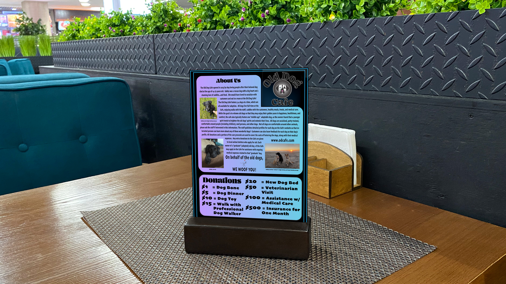
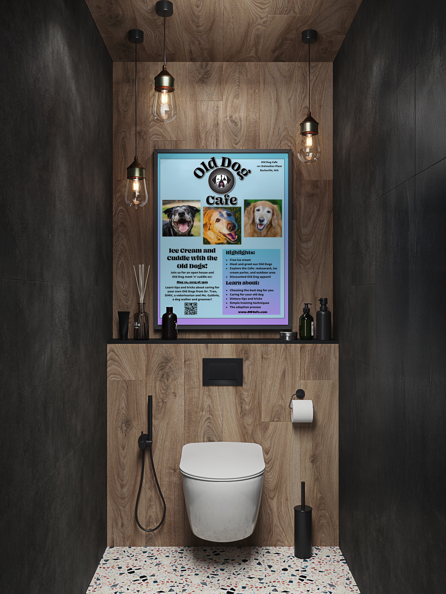
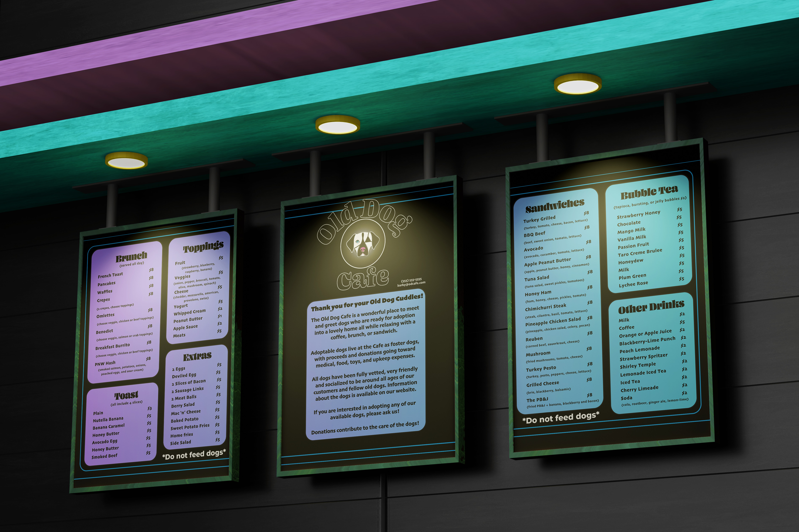
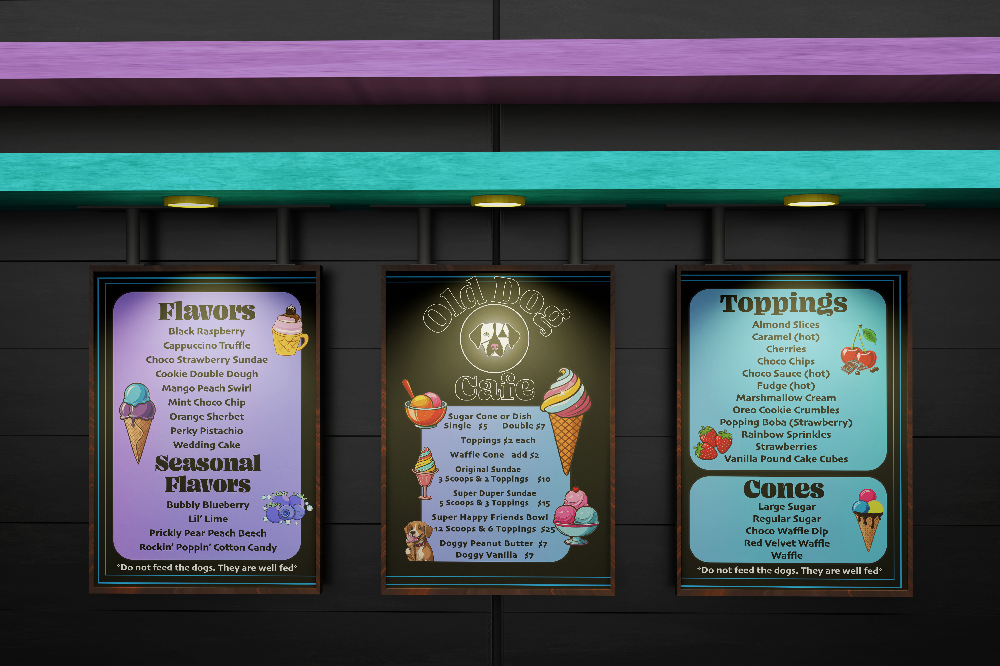
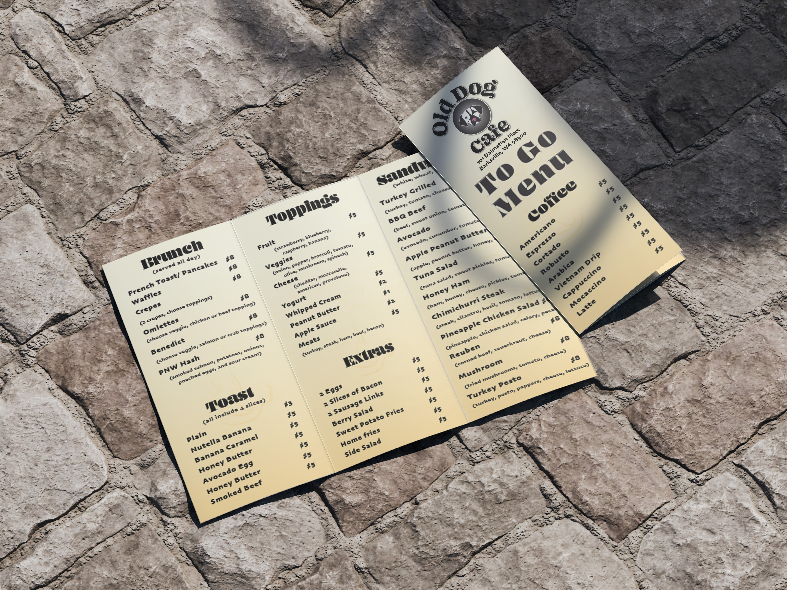
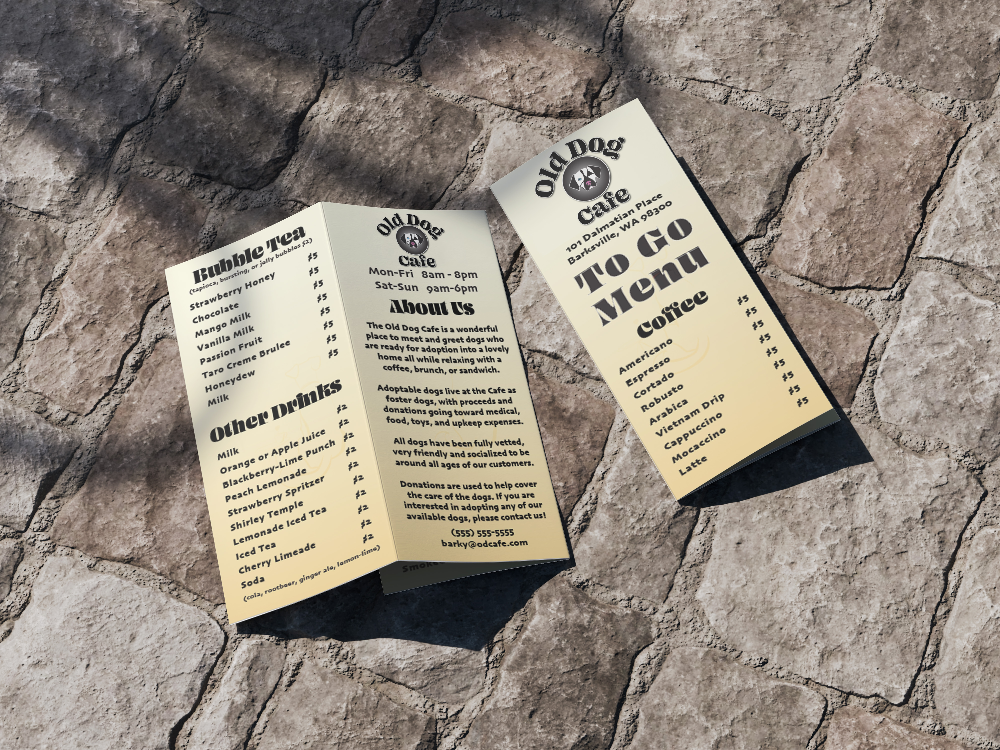
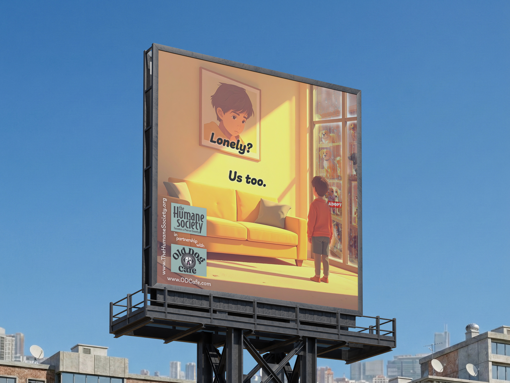
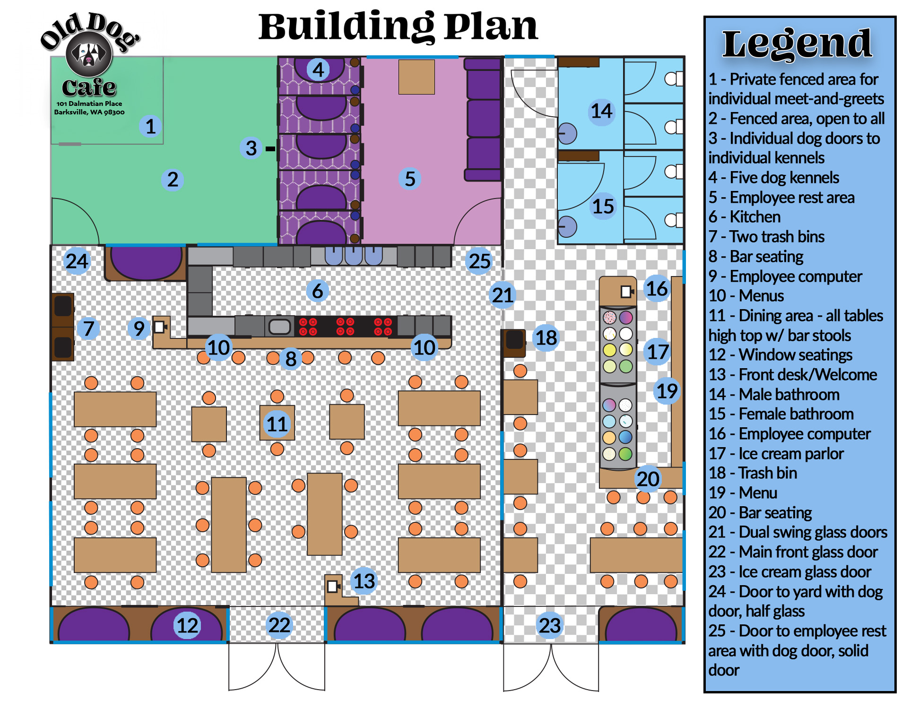
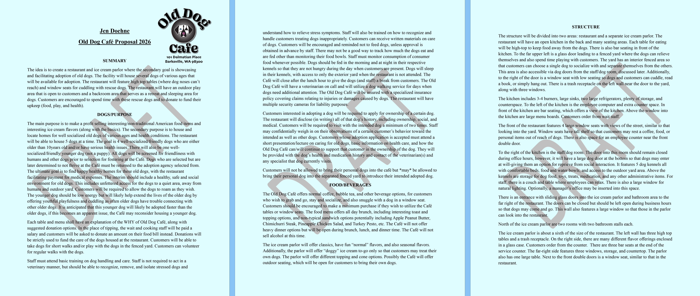

SOFTWARE
Adobe After Effects
Adobe Illustrator
Adobe InDesign
Adobe Photoshop
Blender
Microsoft Word
ROLE
Brand Identity Designer
Environmental Designer
Packaging & Print Designer
Digital Designer
DELIVERABLES
Brand Identity System
Environmental Design
Menu & Print Design
Digital Design
Brand Guidelines
TOOLS & CREDITS
Envato Elements (licensed subscription assets & mockups)
PROJECT OVERVIEW
Old Dog Cafe is a community-focused cafe concept created to support senior dogs awaiting adoption. The brand combines a welcoming restaurant, specialty ice cream parlor, and dedicated dog spaces designed to encourage meaningful connections between guests and rescue animals.
The goal was to create an identity that celebrates the personality, companionship, and overlooked charm of older dogs while developing a complete customer experience across environmental design, print materials, digital media, and promotional applications.
DESIGN APPROACH
The visual direction blends warmth, nostalgia, and playful personality to create a brand experience that feels inviting for both people and pets. The identity system was developed across menus, signage, promotional materials, environmental graphics, and digital applications to create a cohesive space centered around community, compassion, and animal advocacy.

Environmental advertising concept designed to surprise guests with a playful invitation to enjoy ice cream while connecting with senior rescue dogs. The poster combines humor, storytelling, and brand personality to extend the Old Dog Cafe experience throughout the physical space.

Restaurant menu design created to showcase Old Dog Cafe's unique all-day brunch offerings, specialty drinks, and community-focused atmosphere while maintaining consistency with the brand's playful visual identity.

Ice cream parlor menu design extending the Old Dog Cafe experience through seasonal flavors, creative toppings, and playful offerings inspired by the personality of the brand.

Printed takeout menu designed for customer convenience while maintaining the Old Dog Cafe visual system through coordinated typography and brand messaging.

Supporting brand collateral featuring drinks and the Old Dog Cafe story and mission, reinforcing the connection between the cafe experience and its commitment to senior rescue dogs.

Public service campaign concept created in partnership with the Humane Society to promote animal adoption awareness. The emotional storytelling approach highlights shared feelings of loneliness between people and shelter dogs while encouraging community connection and support.

Environmental planning concept illustrating the Old Dog Cafe customer experience, including restaurant spaces, ice cream parlor layout, outdoor areas, and dedicated spaces designed for interaction between guests and rescue dogs.

Brand strategy proposal documenting the Old Dog Cafe concept, including business purpose, customer experience planning, environmental considerations, and the visual identity system developed to support the mission.
Animated brand advertisement concept featuring the Old Dog Cafe mascot exploring a nighttime park environment before discovering the cafe experience. The looping animation creates a memorable emotional connection between the brand character and the cafe's mission of companionship and community.